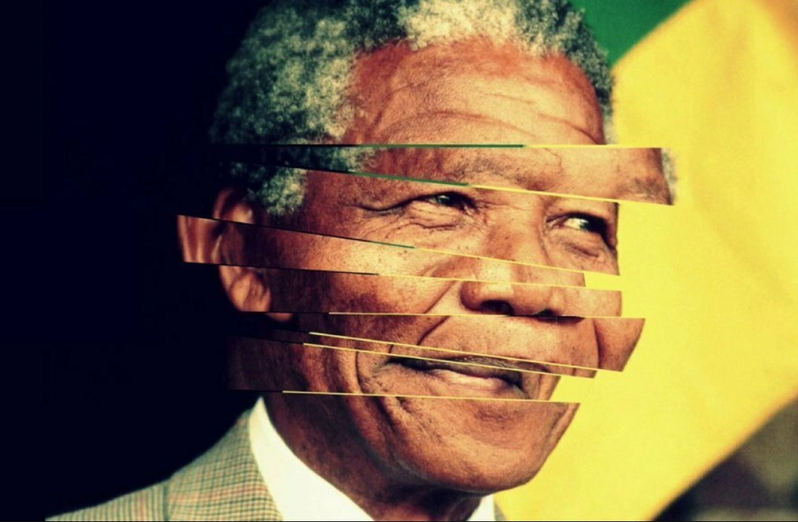

Ефект Мандели полягає в збігу спогадів кількох людей, що суперечать реальним фактам. Таким чином, це феномен, пов'язаний з помилковою колективною пам'яттю людина, згадуючи про якусь подію, модифікує її у своїй свідомості або спочатку сприймає подію помилково. Науковці пояснюють ефект Мандели конфабуляцією — явищем, при якому в людини утворюються спогади про факти, які насправді не відбувалися або ж відбулися в інший проміжок часу. У повсякденні конфабуляція зустрічається досить часто.
Історія
Назва цього феномену з’явилася наприкінці 2013 року – 5 грудня помер колишній президент ПАР Нельсон Мандела. Однак в інтернеті з’явилася купа коментарів від користувачів з усього світу, які думали, що він загинув у в’язниці ще у 80-х. Насправді ж Нельсон Мандела вийшов на волю після 27 років ув’язнення і помер у родинному колі у 2013 році. Звідки у великої кількості людей з’явилися неправильні спогади про смерть політика — невідомо.